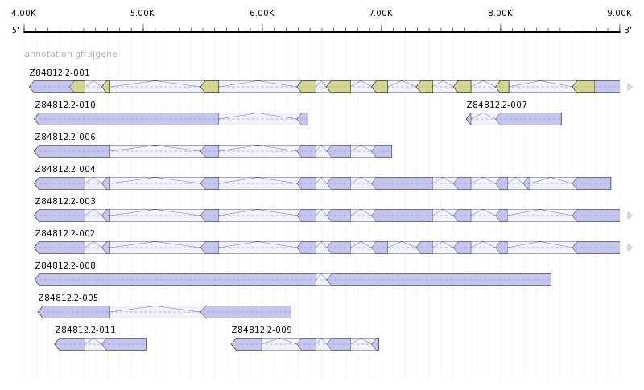

GenomeTools
The GenomeTools genome analysis system is a free collection of bioinformatics tools (in the realm of genome informatics) combined into a single binary named gt. It is based on a collection of C libraries, for example the libgtview library .
If you are interested in gene prediction, have a look at GenomeThreader.
Platforms
GenomeTools has been designed to run on every POSIX compliant UNIX system. For example, Linux, Mac OS X, and OpenBSD. It is probably not easy to get it to compile and run on Windows.
Visualization
With the new gt view tool (build with the libgtview library) you can produce PNG representations out of GFF3 annotation files. The picture below was produced with the following command:
gt view -start 4000 -end 9000 annotation.png annotation.gff3
